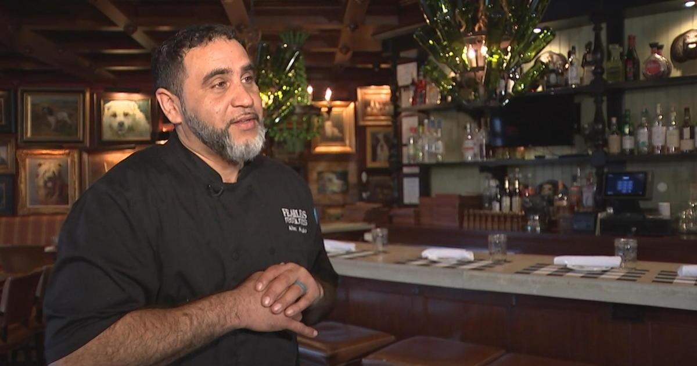

White Dog Cafe chef shares Thanksgiving cooking tips, recipes for leftoversWAYNE, Pa. (CBS) -- Thanksgiving dinner is fast approaching, and for many home chefs, the preparation has already begun. Albert Alvarado, executive chef at the White Dog Café in Wayne, shared some cooking tips for the big meal as well as ways to transform your leftovers with CBS News Philadelphia's Chandler Lutz. The most important thing to remember on Thursday is to baste the turkey while it cooks, Alvarado said. And putting butter under the turkey's skin "goes a long way towards making it nice and juicy," he added. When it comes to sides, preparation is key. "You want to try to do that today, the day before," he said. "You want to have them … oven-ready, cut, cleaned, ready to go so that when you come in and all your family starts rolling around, you don't have to sit there and fuss around with a knife." Spicing up the leftovers For many, Thursday's meal is just the start, and the leftovers are the real star of the holiday. "Thanksgiving leftovers sometimes is some of the stuff that people put more thought into now than the actual dinner," Alvarado said. With that in mind, Alvarado shared some inspiration for how to use Thanksgiving leftovers for every meal this weekend. He even includes pork, which is commonly found on Latino families' Thanksgiving tables. "What we like to do here at White Dog is we like to think about all the meals," he said. Here are some of his recommendations: - Brunch: Sweet potato pancakes made with leftover candied yams or mashed sweet potatoes. Add sour cream, candied pecans and gingersnap crumbles. - Lunch: Roasted pork sliders on Hawaiian rolls with pineapple slaw. - Dinner: Turkey shepherd's pie, made with turkey, gravy, vegetables and mashed potatoes, topped with parmesan cheese. for more features. |
 |